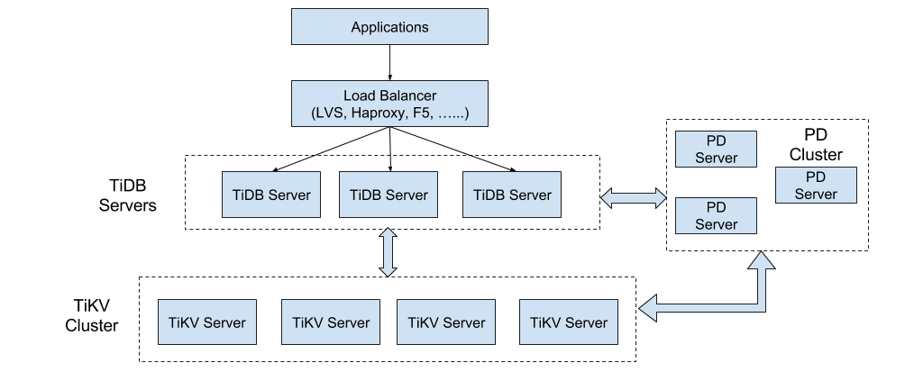

TiDB 学习资料整理
参考资料
本文主要摘自pingcap 如下几篇blog, 从整体上介绍了tidb/tikv的设计架构，以及为什么要这么设计，为了解决什么问题。 看完后能对tidb有个整体的认识。
TiDb 整体架构

TiDB包含三大核心组件，TiDB/TiKV/PD, 组件之间通过GRPC通信, 各自功能如下：TiDB Operator，让 TiDB 成为真正的 Cloud-Native 数据库
- TiDB Server：主要负责 SQL 的解析器和优化器，它相当于计算执行层，同时也负责客户端接入和交互。
- TiKV Server：是一套分布式的 Key-Value 存储引擎，它承担整个数据库的存储层，数据的水平扩展和多副本高可用特性都是在这一层实现。
- PD Server：相当于分布式数据库的大脑，一方面负责收集和维护数据在各个 TiKV 节点的分布情况，另一方面 PD 承担调度器的角色，根据数据分布状况以及各个存储节点的负载来采取合适的调度策略，维持整个系统的平衡与稳定。
TiDB/TiKV 背后对应的论文基础How do we build TiDB, Google Spanner/F1, Raft.


tidb

tidb开发选择从上往下开发，无缝兼容MYSQL协议。talk is cheap, show me the test，使用了大量的测试用例来保证正确性。

关系模型到 Key-Value 模型的映射
CREATE TABLE User {
ID int,
Name varchar(20),
Role varchar(20),
Age int,
PRIMARY KEY (ID),
Key idxAge (age)
};
每行数据按照如下规则进行编码成 Key-Value pair：
Key: tablePrefix{tableID}_recordPrefixSep{rowID}
Value: [col1, col2, col3, col4]
其中 Key 的 tablePrefix/recordPrefixSep 都是特定的字符串常量，用于在 KV 空间内区分其他数据。 对于 Index 数据，会按照如下规则编码成 Key-Value pair：
Key: tablePrefix{tableID}_indexPrefixSep{indexID}_indexedColumnsValue
Value: rowID
注意上述编码规则中的 Key 里面的各种 xxPrefix 都是字符串常量，作用都是区分命名空间，以免不同类型的数据之间相互冲突，定义如下：
var(
tablePrefix = []byte{'t'}
recordPrefixSep = []byte("_r")
indexPrefixSep = []byte("_i")
)
tikv

TiKV 利用 Raft 来做数据复制，每个数据变更都会落地为一条 Raft 日志，通过 Raft 的日志复制功能，将数据安全可靠地同步到 Group 的多数节点中。 通过单机的 RocksDB，我们可以将数据快速地存储在磁盘上；通过 Raft，我们可以将数据复制到多台机器上，以防单机失效。数据的写入是通过 Raft 这一层的接口写入，而不是直接写 RocksDB。通过实现 Raft，我们拥有了一个分布式的 KV，现在再也不用担心某台机器挂掉了。


MVCC
很多数据库都会实现多版本控制（MVCC），TiKV 也不例外。设想这样的场景，两个 Client 同时去修改一个 Key 的 Value，如果没有 MVCC，就需要对数据上锁，在分布式场景下，可能会带来性能以及死锁问题。 TiKV 的 MVCC 实现是通过在 Key 后面添加 Version 来实现，简单来说，没有 MVCC 之前，可以把 TiKV 看做这样的：
pd
下面问题值得仔细思考。
- 如何保证同一个 Region 的多个 Replica 分布在不同的节点上？更进一步，如果在一台机器上启动多个 TiKV 实例，会有什么问题？
- TiKV 集群进行跨机房部署用于容灾的时候，如何保证一个机房掉线，不会丢失 Raft Group 的多个 Replica？
- 添加一个节点进入 TiKV 集群之后，如何将集群中其他节点上的数据搬过来?
- 当一个节点掉线时，会出现什么问题？整个集群需要做什么事情？如果节点只是短暂掉线（重启服务），那么如何处理？如果节点是长时间掉线（磁盘故障，数据全部丢失），需要如何处理？
- 假设集群需要每个 Raft Group 有 N 个副本，那么对于单个 Raft Group 来说，Replica 数量可能会不够多（例如节点掉线，失去副本），也可能会 过于多（例如掉线的节点又回复正常，自动加入集群）。那么如何调节 Replica 个数？
- 读/写都是通过 Leader 进行，如果 Leader 只集中在少量节点上，会对集群有什么影响？
- 并不是所有的 Region 都被频繁的访问，可能访问热点只在少数几个 Region，这个时候我们需要做什么？
- 集群在做负载均衡的时候，往往需要搬迁数据，这种数据的迁移会不会占用大量的网络带宽、磁盘 IO 以及 CPU？进而影响在线服务？
作为一个分布式高可用存储系统，必须满足的需求，包括四种：
- 副本数量不能多也不能少
- 副本需要分布在不同的机器上
- 新加节点后，可以将其他节点上的副本迁移过来
- 节点下线后，需要将该节点的数据迁移走
作为一个良好的分布式系统，需要优化的地方，包括：
- 维持整个集群的 Leader 分布均匀
- 维持每个节点的储存容量均匀
- 维持访问热点分布均匀
- 控制 Balance 的速度，避免影响在线服务
- 管理节点状态，包括手动上线/下线节点，以及自动下线失效节点